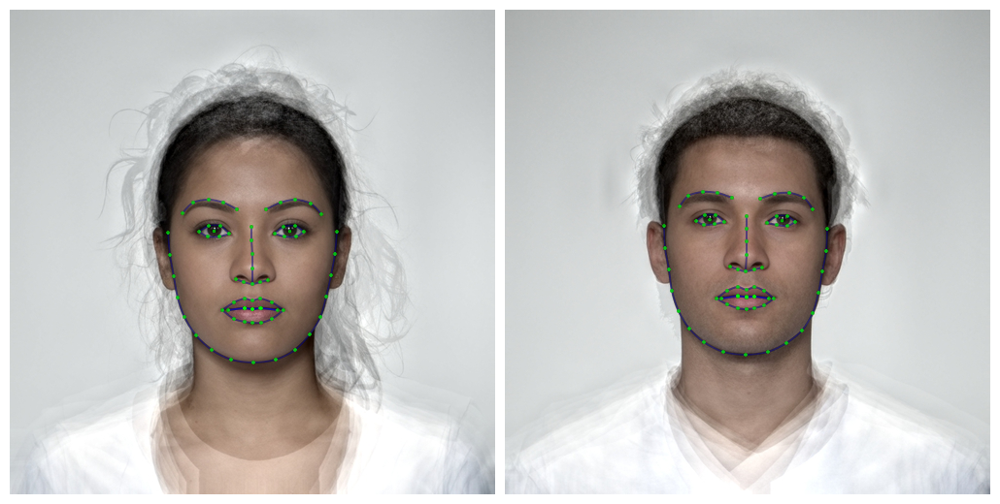
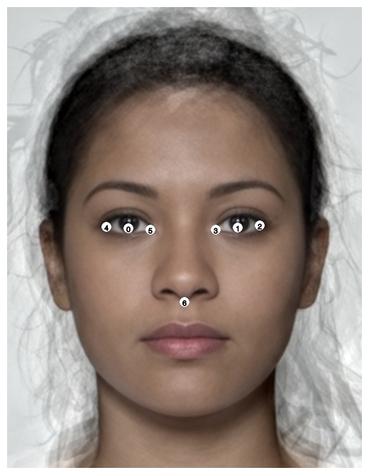
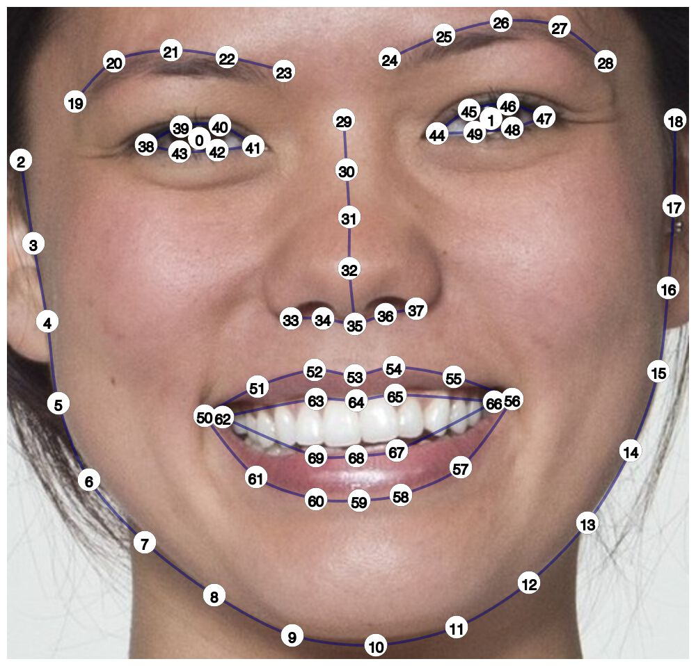

This package provides dlib shape models and scripts for use with the package webmorphR. These files are used for different auto-delineations with python (although I may change this to use dlib in C++ directly). It also provides (very experimental) functions for training shape models.
Installation
You can install the development version of webmorphR.dlib from GitHub with:
# install.packages("remotes")
remotes::install_github("debruine/webmorphR.dlib")Now load the webmorphR package (it’s installed with webmorphR.dlib) and check if you can use the auto-delineation function.
library(webmorphR)
#>
#> ************
#> Welcome to webmorphR. For support and examples visit:
#> https://debruine.github.io/webmorphR/
#> ************
# load demo images and delineate
stim_70_point <- demo_stim() |>
auto_delin(model = "dlib70",
replace = TRUE)
# plot with template points
draw_tem(stim_70_point) |> plot()
If this doesn’t work, you probably need to sort out your python installation.
reticulate::install_python()The auto_delin() function will load the required python modules. If you get errors about that, you may need to install cmake and dlib first. I found these instructions useful for dlib installation on a mac.
Templates
dlib7
This is the 5-point template from Davis King’s shape_predictor_5_face_landmarks.dat trained on 7198 faces from the dlib 5-point face landmark dataset. I added two points for the eye centres (0 and 1) in order to aid alignment by eyes.
It’s a very fast auto-delineation and useful if you just need to align faces to the same position, orientation or general size.

dlib70

This is the 68-point template from Davis King’s shape_predictor_68_face_landmarks.dat trained on the iBUG 300-W dataset. I added two points for the eye centres (0 and 1) in order to aid alignment by eyes.
C. Sagonas, E. Antonakos, G, Tzimiropoulos, S. Zafeiriou, M. Pantic. 300 faces In-the-wild challenge: Database and results. Image and Vision Computing (IMAVIS), Special Issue on Facial Landmark Localisation “In-The-Wild”. 2016.
The license for this dataset excludes commercial use, so the trained model can not be used in a commercial product.